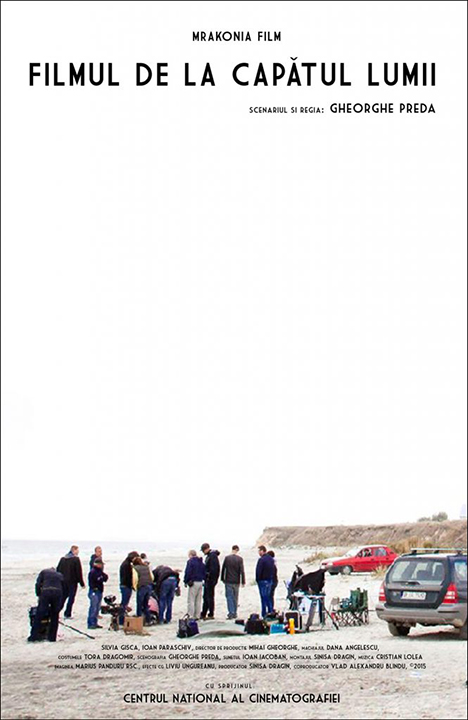
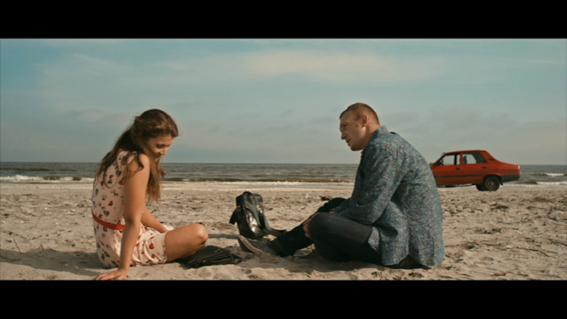
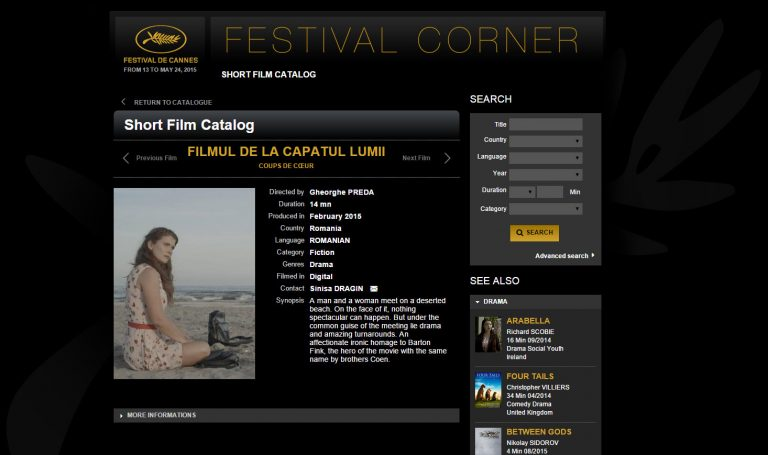

Video editing and Effects for indie short film
"The Film at the End of the World"
Credits:
Compositing and Effects for the short film ”FILMUL DE LA CAPĂTUL LUMII”
Director: GHEORGHE PREDA
Producers: Sinisa Dragin, Mrakonia Film
Sound Effects: Musitech, Autohton
Music: Cristian Lolea

  